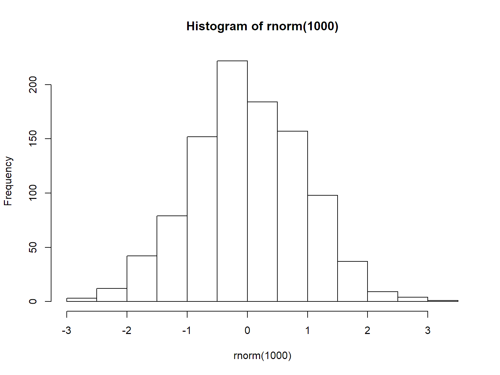
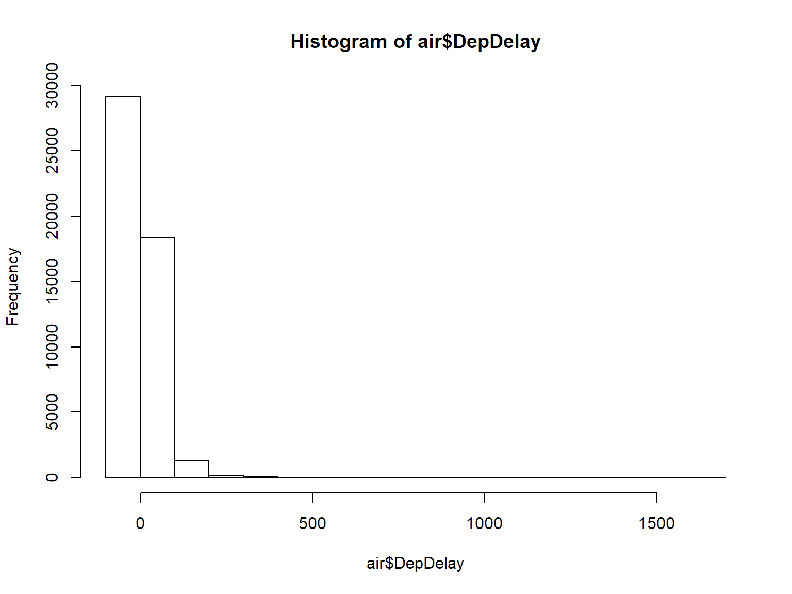
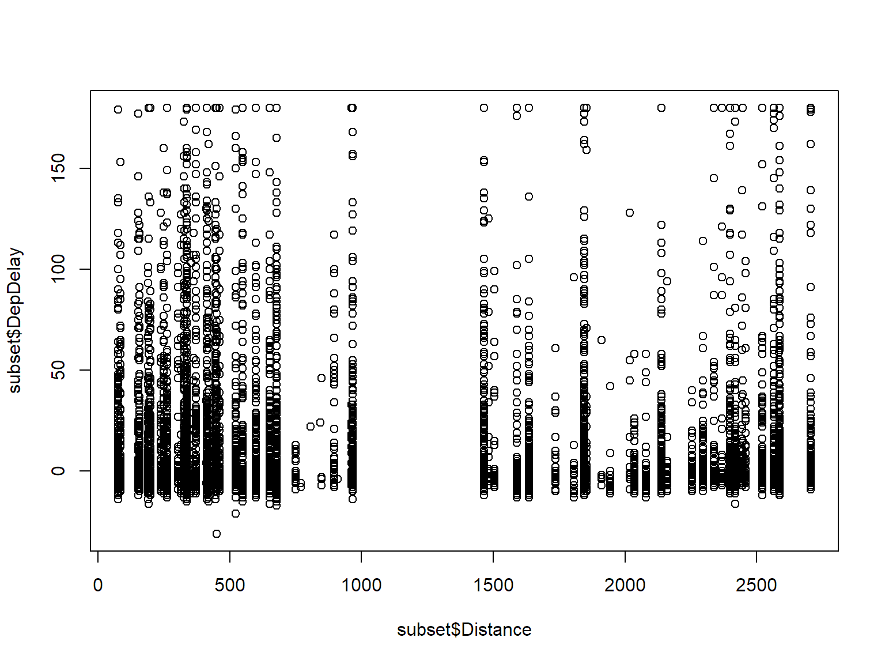
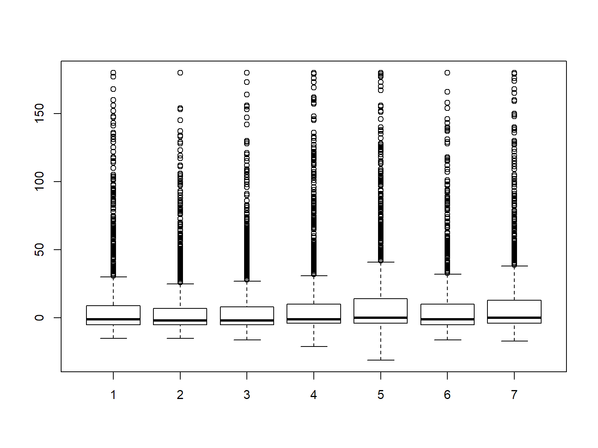
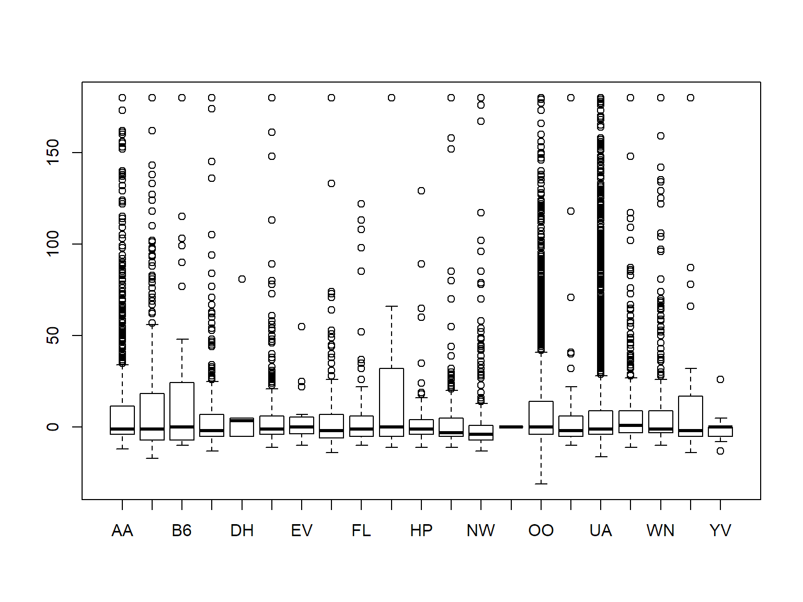
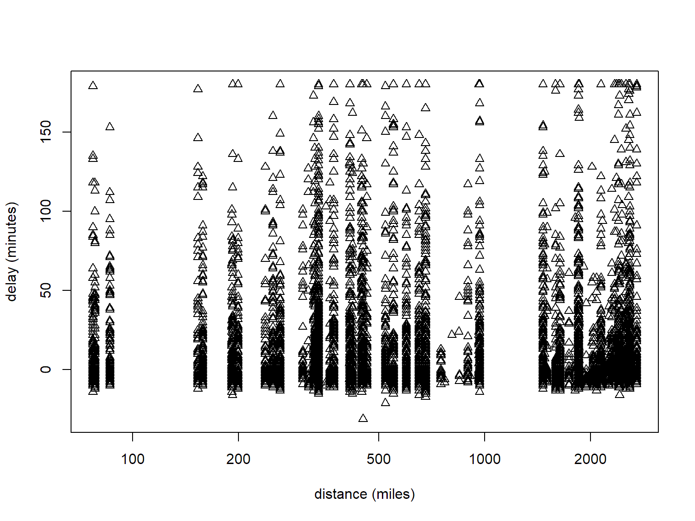

Week 1: R Basics
2 + 2 # add numbers## [1] 42 * pi # multiply by a constant## [1] 6.2831857 + runif(1) # add a random number## [1] 7.8434683^4 # powers## [1] 81sqrt(4^4) # functions## [1] 16log(10)## [1] 2.302585log(100, base = 10)## [1] 223 %/% 2 ## [1] 1123 %% 2## [1] 1# scientific notation
5000000000 * 1000## [1] 5e+125e9 * 1e3## [1] 5e+12Think of a mathematical operation you need - can you guess how to do it in R?
A key action in R is to store values in the form of R objects, and to examine the value of R objects.
val <- 3
val## [1] 3print(val)## [1] 3Val <- 7 # case-sensitive!
print(c(val, Val))## [1] 3 7We can work with (and store) sequences and repetitions
mySeq <- 1:6
mySeq## [1] 1 2 3 4 5 6myOtherSeq <- seq(1.1, 11.1, by = 2)
myOtherSeq## [1] 1.1 3.1 5.1 7.1 9.1 11.1length(myOtherSeq)## [1] 6fours <- rep(4, 6)
fours## [1] 4 4 4 4 4 4## This is a comment: here is an example of non-numeric data
depts <- c('espm', 'pmb', 'stats')
depts## [1] "espm" "pmb" "stats"If we don't assign the output of a command to an object, we haven't saved it for later use.
R gives us a lot of flexibility (within certain rules) for assigning to (parts of) objects from (parts of) other objects.
If you're starting to type something you've typed before, or the long name of an R object or function, STOP! You likely don't need to type all of that.
source(). For example: source('myRcodeFile.R')Question: Are there other tricks that anyone knows of?
The most basic form of an R object is a vector. In fact, individual (scalar) values are vectors of length one.
We can concatenate values into a vector with c().
## numeric vector
nums <- c(1.1, 3, -5.7)
devs <- rnorm(5)
devs## [1] -0.5056775 0.2640271 -0.1007583 1.6324775 2.0214868## integer vector
ints <- c(1L, 5L, -3L) # force storage as integer not decimal number
## 'L' is for 'long integer' (historical)
idevs <- sample(ints, 100, replace = TRUE)
## character vector
chars <- c('hi', 'hallo', "mother's", 'father\'s',
"She said, 'hi'", "He said, \"hi\"" )
chars## [1] "hi" "hallo" "mother's" "father's"
## [5] "She said, 'hi'" "He said, \"hi\""cat(chars, sep = "\n")## hi
## hallo
## mother's
## father's
## She said, 'hi'
## He said, "hi"## logical vector
bools <- c(TRUE, FALSE, TRUE)
bools## [1] TRUE FALSE TRUEvals <- seq(2, 12, by = 2)
vals## [1] 2 4 6 8 10 12vals[3]## [1] 6vals[3:5]## [1] 6 8 10vals[c(1, 3, 6)]## [1] 2 6 12vals[-c(1, 3, 6)]## [1] 4 8 10vals[c(rep(TRUE, 3), rep(FALSE, 2), TRUE)]## [1] 2 4 6 12#######################################################################
## IMPORTANT: read in the airline dataset from disk;
## first make sure your working directory is the 'modules' directory
getwd()## [1] "C:/Workshops/RSpatial/RSpatial_FourDay/rspatialdata/slides"## if the result is not the 'modules' subdirectory of the bootcamp
## directory, set the working directly along the lines of this:
##
## setwd('/Users/paciorek/Desktop/r-bootcamp-2017/modules')
##
## replace '~/Desktop' with whatever directory you put the bootcamp
## materials in; e.g./ 'C:\\Users\\sarah\\r-bootcamp-2017\\modules'
##
air <- read.csv(file.path('../exercises/data', 'airline.csv'), stringsAsFactors = FALSE)
#######################################################################
## create a simple vector from the airline dataset
delay <- air$DepDelay
delay[1:10]## [1] 25 -7 -2 -1 18 -11 4 0 24 -2We can substitute values into vectors
vals[4] <- -35
vals[1:2] <- 0
vals <- rnorm(100)
## How does R process these next subset operations?
vals[vals < 0] <- 0
vals[1:8]## [1] 0.4848884 0.0000000 0.0000000 0.0000000 0.6402963 0.0000000 0.0000000
## [8] 0.0000000crazymakers <- delay[delay > 300]
crazymakers[1:10]## [1] NA 404 NA NA NA NA NA NA NA NAcrazymakers <- crazymakers[ !is.na(crazymakers) ]
crazymakers[1:10]## [1] 404 483 407 333 593 1659 348 346 443 472At the core of R is the idea of doing calculations on entire vectors.
vec1 <- sample(1:5, 10, replace = TRUE)
vec2 <- sample(1:5, 10, replace = TRUE)
vec1## [1] 2 5 5 5 1 2 3 2 2 4vec2## [1] 5 1 1 3 1 2 5 1 2 4vec1 + vec2## [1] 7 6 6 8 2 4 8 3 4 8vec1^vec2## [1] 32 5 5 125 1 4 243 2 4 256vec1 >= vec2## [1] FALSE TRUE TRUE TRUE TRUE TRUE FALSE TRUE TRUE TRUEvec1 <= 3## [1] TRUE FALSE FALSE FALSE TRUE TRUE TRUE TRUE TRUE FALSE## using 'or'
vec1 <= 0 | vec1 >= 3## [1] FALSE TRUE TRUE TRUE FALSE FALSE TRUE FALSE FALSE TRUE## using 'and'
vec1 <= 0 & vec1 >= vec2## [1] FALSE FALSE FALSE FALSE FALSE FALSE FALSE FALSE FALSE FALSEvec1 == vec2## [1] FALSE FALSE FALSE FALSE TRUE TRUE FALSE FALSE TRUE TRUEvec1 != vec2## [1] TRUE TRUE TRUE TRUE FALSE FALSE TRUE TRUE FALSE FALSE## careful:
vec1 = vec2
identical(vec1, vec2)## [1] TRUEdelayChange <- air$DepDelay - air$ArrDelay ## make up time in flight?
tmp <- delayChange[1:100]
tmp >= 15 ## [1] TRUE TRUE FALSE FALSE FALSE FALSE FALSE FALSE TRUE FALSE FALSE
## [12] FALSE FALSE FALSE FALSE FALSE FALSE FALSE TRUE FALSE FALSE TRUE
## [23] FALSE FALSE FALSE TRUE FALSE NA FALSE FALSE FALSE TRUE FALSE
## [34] FALSE FALSE FALSE FALSE FALSE FALSE FALSE FALSE FALSE FALSE FALSE
## [45] FALSE FALSE FALSE FALSE FALSE FALSE FALSE FALSE FALSE FALSE FALSE
## [56] FALSE FALSE FALSE FALSE FALSE FALSE FALSE TRUE FALSE FALSE FALSE
## [67] FALSE FALSE FALSE FALSE FALSE FALSE FALSE FALSE FALSE FALSE FALSE
## [78] FALSE FALSE TRUE TRUE FALSE FALSE FALSE FALSE FALSE FALSE FALSE
## [89] FALSE FALSE FALSE FALSE FALSE TRUE FALSE FALSE FALSE FALSE FALSE
## [100] FALSEAn important related concept is that of recycling
vec3 <- sample(1:5, 5, replace = TRUE)
vec4 <- sample(1:5, 3, replace = TRUE)
vec1## [1] 5 1 1 3 1 2 5 1 2 4vec3## [1] 5 5 4 1 3vec4 ## [1] 1 1 3vec1 + vec3## [1] 10 6 5 4 4 7 10 5 3 7vec1 + vec4## Warning in vec1 + vec4: longer object length is not a multiple of shorter
## object length## [1] 6 2 4 4 2 5 6 2 5 5Question: Tell me what's going on. What choices were made by the R developers?
median## function (x, na.rm = FALSE, ...)
## UseMethod("median")
## <bytecode: 0x0000000019e8f360>
## <environment: namespace:stats>class(median)## [1] "function"median(delay)## [1] NAFunctions generally take arguments, some of which are often optional:
median(delay, na.rm = TRUE)## [1] -1hist(rnorm(1000))
To get information about a function you know exists, use help or ?, e.g., ?lm. For information on a general topic, use apropos or ??
help(lm)
?lm
?log
## ??'regr' # take out the '#' to demo live - there's an issue with Markdown processing...Vectors are not the only kinds of R objects.
Vectors of various types (numeric (i.e., decimal/floating point/double), integer, boolean, character), all items must be of the same type
Matrices of various types, all items must be of the same type
mat <- matrix(rnorm(9), nrow = 3)
t(mat) %*% mat## [,1] [,2] [,3]
## [1,] 1.430049130 0.003374087 -0.2341637
## [2,] 0.003374087 1.051928773 0.7802726
## [3,] -0.234163733 0.780272634 0.6396893dim(mat)## [1] 3 3Collections of columns of potentially different types
head(air)## X Year Month DayofMonth DayOfWeek DepTime CRSDepTime ArrTime
## 1 484123 2008 8 6 3 943 918 1130
## 2 143347 2006 2 6 1 1028 1035 1327
## 3 200908 2006 7 3 1 2028 2030 2149
## 4 309279 2007 5 20 7 1244 1245 1447
## 5 490334 2008 8 21 4 1309 1251 1503
## 6 108887 2005 11 26 6 1359 1410 1609
## CRSArrTime UniqueCarrier FlightNum TailNum ActualElapsedTime
## 1 1121 OO 5726 N290SW 107
## 2 1405 TZ 4627 N315TZ 299
## 3 2158 US 865 N651AW 81
## 4 1431 UA 562 N531UA 123
## 5 1423 UA 1270 N925UA 114
## 6 1606 UA 1118 N379UA 130
## CRSElapsedTime AirTime ArrDelay DepDelay Origin Dest Distance TaxiIn
## 1 123 91 9 25 SFO RDM 462 1
## 2 330 280 -38 -7 SFO OGG 2338 6
## 3 88 65 -9 -2 SFO LAS 414 5
## 4 106 86 16 -1 SFO PDX 550 7
## 5 92 74 40 18 SFO EUG 451 5
## 6 116 114 3 -11 SFO SEA 679 5
## TaxiOut Cancelled CancellationCode Diverted CarrierDelay WeatherDelay
## 1 15 0 0 NA NA
## 2 13 0 0 0 0
## 3 11 0 0 0 0
## 4 30 0 0 0 0
## 5 35 0 0 0 0
## 6 11 0 0 0 0
## NASDelay SecurityDelay LateAircraftDelay
## 1 NA NA NA
## 2 0 0 0
## 3 0 0 0
## 4 16 0 0
## 5 25 0 15
## 6 0 0 0dim(air)## [1] 50000 30nrow(air)## [1] 50000names(air)## [1] "X" "Year" "Month"
## [4] "DayofMonth" "DayOfWeek" "DepTime"
## [7] "CRSDepTime" "ArrTime" "CRSArrTime"
## [10] "UniqueCarrier" "FlightNum" "TailNum"
## [13] "ActualElapsedTime" "CRSElapsedTime" "AirTime"
## [16] "ArrDelay" "DepDelay" "Origin"
## [19] "Dest" "Distance" "TaxiIn"
## [22] "TaxiOut" "Cancelled" "CancellationCode"
## [25] "Diverted" "CarrierDelay" "WeatherDelay"
## [28] "NASDelay" "SecurityDelay" "LateAircraftDelay"class(air)## [1] "data.frame"is.matrix(air)## [1] FALSEclass(air$DepDelay)## [1] "integer"class(air$UniqueCarrier)## [1] "character"class(air$Diverted)## [1] "integer"Collections of disparate or complicated objects
myList <- list(stuff = 3, mat = matrix(1:4, nrow = 2),
moreStuff = c("china", "japan"), list(5, "bear"))
myList## $stuff
## [1] 3
##
## $mat
## [,1] [,2]
## [1,] 1 3
## [2,] 2 4
##
## $moreStuff
## [1] "china" "japan"
##
## [[4]]
## [[4]][[1]]
## [1] 5
##
## [[4]][[2]]
## [1] "bear"myList[[1]] # result is not (usually) a list (unless you have nested lists)## [1] 3identical(myList[[1]], myList$stuff)## [1] TRUEmyList$moreStuff[2]## [1] "japan"myList[[4]][[2]]## [1] "bear"myList[1:3] # subset of a list is a list## $stuff
## [1] 3
##
## $mat
## [,1] [,2]
## [1,] 1 3
## [2,] 2 4
##
## $moreStuff
## [1] "china" "japan"myList$newOne <- 'more weird stuff'
names(myList)## [1] "stuff" "mat" "moreStuff" "" "newOne"Lists can be used as vectors of complicated objects. E.g., suppose you have a linear regression for each value of a stratifying variable. You could have a list of regression fits. Each regression fit will itself be a list, so you'll have a list of lists.
R has several approaches to object-oriented programming. These are widely used, albeit a bit klunky.
The most basic is 'S3' objects. These objects are generally built upon lists.
mod <- lm(air$DepDelay ~ air$Distance) # illustration ONLY - poorly-specified model!
class(mod)## [1] "lm"is.list(mod)## [1] TRUEnames(mod)## [1] "coefficients" "residuals" "effects" "rank"
## [5] "fitted.values" "assign" "qr" "df.residual"
## [9] "na.action" "xlevels" "call" "terms"
## [13] "model"mod$coefficients## (Intercept) air$Distance
## 11.5919999848 -0.0002999301mod[['coefficients']]## (Intercept) air$Distance
## 11.5919999848 -0.0002999301mod[[1]]## (Intercept) air$Distance
## 11.5919999848 -0.0002999301The magic of OOP here is that methods (i.e., functions) can be tailored to work specifically with specific kinds of objects.
summary(air$DepDelay)## Min. 1st Qu. Median Mean 3rd Qu. Max. NA's
## -59.00 -5.00 -1.00 11.28 10.00 1659.00 888summary(mod)##
## Call:
## lm(formula = air$DepDelay ~ air$Distance)
##
## Residuals:
## Min 1Q Median 3Q Max
## -70.39 -15.86 -12.46 -1.40 1647.88
##
## Coefficients:
## Estimate Std. Error t value Pr(>|t|)
## (Intercept) 11.5920000 0.2557774 45.321 <2e-16 ***
## air$Distance -0.0002999 0.0001849 -1.623 0.105
## ---
## Signif. codes: 0 '***' 0.001 '**' 0.01 '*' 0.05 '.' 0.1 ' ' 1
##
## Residual standard error: 36.58 on 49110 degrees of freedom
## (888 observations deleted due to missingness)
## Multiple R-squared: 5.36e-05, Adjusted R-squared: 3.324e-05
## F-statistic: 2.633 on 1 and 49110 DF, p-value: 0.1047Question: What do you think R is doing behind the scenes?
Consider summary.lm.
You can use the as() family of functions.
ints <- 1:10
as.character(ints)## [1] "1" "2" "3" "4" "5" "6" "7" "8" "9" "10"as.numeric(c('3.7', '4.8'))## [1] 3.7 4.8Be careful: R tries to be helpful and convert between types/classes when it thinks it's a good idea. Sometimes it is overly optimistic.
indices <- c(1.7, 2.3)
ints[indices]## [1] 1 2ints[0.999999999]## integer(0)R has a number of functions for getting metadata about your objects. Some of this is built in to RStudio.
vec1 <- 1:4
vec2 <- c(1, 2, 3, 4)
length(vec1)## [1] 4str(vec1)## int [1:4] 1 2 3 4class(vec1)## [1] "integer"typeof(vec1)## [1] "integer"class(vec2)## [1] "numeric"typeof(vec2)## [1] "double"is.vector(vec1)## [1] TRUEis.list(vec1)## [1] FALSEis.list(myList)## [1] TRUEis.vector(myList)## [1] TRUEis.data.frame(air)## [1] TRUEis.list(air)## [1] TRUEQuestion: What have you learned? Does it make sense?
R has several different plotting systems:
We'll see a little bit of base graphics here and then lattice and ggplot2 tomorrow in Module 8.
hist(air$DepDelay)
## make a random subset for quicker plotting:
set.seed(1) # make the subset reproducible
subset <- air[sample(1:nrow(air), 10000, replace = FALSE), ]
## censor the outliers to limit plotting range
subset$DepDelay[subset$DepDelay > 60*3] <- 60*3
plot(subset$DepDelay ~ subset$Distance)
boxplot(subset$DepDelay ~ subset$DayOfWeek)
boxplot(subset$DepDelay ~ subset$UniqueCarrier)
Check out help(par) for various graphics settings; these are set via par() or within the specific graphics command (some can be set in either place), e.g.,
par(pch = 2)
plot(subset$DepDelay ~ subset$Distance, xlab = 'distance (miles)',
ylab = 'delay (minutes)', log = 'x')
In general, your answers to any questions should involve writing code to manipulate objects. For example, if I ask you to find the maximum flight delay, do not scan through all the values and find it by eye. Use R to do the calculations and print results.
Create a variable called 'x' that contains the mean flight delay.
Use functions in R to round 'x' to two decimal places and to two significant digits.
Create a vector of flight distances in units of kilometers rather than miles.
Create a boolean (TRUE/FALSE) vector indicating whether the departure delay is shorter than the arrival delay.
Summarize the difference between the departure and arrival delays. Do flights tend to make up some of the delay time in flight?
Plot a histogram of the flight departure delays with negative delays set to zero, censoring delay times at a maximum of 60 minutes. Explore the effect of changing the number of bins in the histogram using the 'breaks' argument.
Subset the data to flights going to Chicago (ORD) and Houston (IAH). Plot delay against scheduled departure time (CRSDepTime). Add a title to the plot. Now plot so that flights to Chicago are in one color and those to Houston in another, using the 'col' argument. What are some problems with the plot?
Consider the following regression model. Figure out how to extract the \(R^2\) and residual standard error and store in new R variables.
y <- rnorm(10)
x <- rnorm(10)
mod <- lm(y ~ x)
summ <- summary(mod)For flights to ORD and IAH, plot departure delay against time in days where day 1 is Jan 1 2005 and the last day is Dec 31 2008. As above, use different colors for the two different destinations.
Now modify the size of the points. Add a legend. Rotate the numbers on the y-axis so they are printed horizontally. Recall that help(par) will provide a lot of information.